Tutorial 3: Visualization and Metadata Integration
Beatriz M. Meriño
2026-11-13
Source:vignettes/tutorial-3-cactus-phylogeny-visualization.Rmd
tutorial-3-cactus-phylogeny-visualization.RmdAbstract
This tutorial covers the third stage of the phylogenetic workflow: integration of species metadata, figures of the phylogenetic trees, and summaries of conservation status. It uses the supermatrix, maximum-likelihood tree, bootstrap support values and chronogram produced in Tutorial 1 and Tutorial 2.
Module 11 checks the species in the supermatrix against the accepted checklist of Cactaceae (Korotkova et al. 2021) and retrieves species-level assessments from the IUCN Red List. The result is one table that records, for each species, its taxonomic status, molecular sampling, placement in the tree, distribution and conservation category.
Module 12 generates seventeen figures showing the coverage of the molecular dataset, structure of the supermatrix, the tree and the chronogram, the species accounting across pipeline stages, and summaries of IUCN categories, endemism, threats and habitats.
Complete Pipeline Execution Workflow
Setup: Creating a Clean Workspace
Install the required packages before running this module. IUCN
queries use the rredlist package.
To install the required dependencies:
required_pkgs <- c("dplyr", "tidyr", "stringr", "readr", "ggplot2", "forcats", "purrr", "scales", "ggrepel", "rredlist")
new_pkgs <- required_pkgs[!(required_pkgs %in% installed.packages()[,"Package"])]
if(length(new_pkgs)) install.packages(new_pkgs)IUCN Red List API token. The IUCN queries require a
personal API token. Run rredlist::rl_use_iucn() to open the
registration page, then store the token in .Renviron
(opened with usethis::edit_r_environ()) as
IUCN_REDLIST_KEY="your_api_key", and finally restart R.
Data Setup and Preprocessing
To run the module as a script, copy the executable script to the tutorial directory:
tutorial_dir <- path.expand("~/Desktop/PhyloCactus_Tutorial")
setwd(tutorial_dir)
# Copy the entire tutorial script for easy execution
file.copy(
system.file("scripts", "tutorial-3-cactus-phylogeny-visualization.R", package = "PhyloCactus"),
file.path(tutorial_dir, "tutorial-3-cactus-phylogeny-visualization.R")
)Module 11: Taxonomic Reconciliation and IUCN Metadata Enrichment
This module requires the outputs of Tutorial 2: Phylogenetic Inference and Divergence Time Estimation.
Species Record
The species record links each accepted species to its molecular
sampling, its placement in the tree and its IUCN Red List category. With
these data, threatened species without sequence data can be listed
(TABLE_conservation_prioritization_gaps.csv, below), and
the molecular sampling of threatened and non-threatened species can be
compared. The record can also serve as input for phylogeny-based
conservation metrics such as EDGE scores (Isaac et al.,
2007).
Names are reconciled against the Cactaceae checklist of
Caryophyllales.org (export of 1 July 2026), which lists 1,965 accepted
species. With 28 outgroup species from Anacampserotaceae, Portulacaceae
and Talinaceae, the record contains 1,993 species. The supermatrix
includes 1,218 of them (1,190 ingroup, 28 outgroup). The
maximum-likelihood tree and the chronogram have 1,208 tips (1,180
ingroup, 28 outgroup), because RAxML-NG removed 10 ingroup
species whose sequences were identical to those of another species. The
other 775 accepted species have no sequence data, of which 102 are
listed as threatened (CR, EN or VU) by the IUCN Red List.
Load the libraries and the outputs of the previous modules:
# ============================================================
# LIBRARIES
# ============================================================
library(PhyloCactus)
library(dplyr)
library(tidyr)
library(stringr)
library(readr)
library(ggplot2)
library(forcats)
library(purrr)
library(scales)
dir.create("9_Visualization/figures", showWarnings = FALSE, recursive = TRUE)
dir.create("9_Visualization/tables", showWarnings = FALSE, recursive = TRUE)
# ============================================================
# INPUT FILES (Referenced from tutorial root paths)
# ============================================================
species_file <- "6_Concatenated/final_tables/TABLE_final_species_alignment_summary.csv"
output_file <- "9_Visualization/tables/TABLE_species_all_data.csv"
prioritization_file <- "9_Visualization/tables/TABLE_conservation_prioritization_gaps.csv"
marker_stats_file <- "6_Concatenated/final_tables/TABLE_marker_statistics.csv"
marker_ranges_file <- "6_Concatenated/final_tables/TABLE_marker_ranges.tsv"
# Canonical inputs that do not change across runs
# The checklist (Korotkova et al. 2021) is read from the local path in PHYLOCACTUS_CHECKLIST
accepted_list_file <- phylocactus_checklist()
constraints_csv_path <- system.file("extdata", "cactus_constraints.csv", package = "PhyloCactus")
# Tree outputs from Modules 9 and 10
supp_tree_file <- if (file.exists("7_Phylogenetics/cactus_support.raxml.support")) {
"7_Phylogenetics/cactus_support.raxml.support"
} else {
"7_Phylogenetics/cactus.raxml.bestTree"
}
dated_tree_file <- "8_Dating/Zuntini2024_young/BestTree_treePL.tree" # calibration scheme 1 (Tutorial 2, Module 10)
chrono_file <- "8_Dating/Zuntini2024_young/dated_summary_hpd.tree"
# ============================================================
# LOAD SPECIES TABLE & ACCEPTED CHECKLIST
# ============================================================
message("Reading species genetics table from supermatrix outputs...")
species_summary <- read_csv(species_file, show_col_types = FALSE) %>%
mutate(species_clean = str_replace_all(species, "_", " "))
message("Reading accepted checklist...")
if (grepl("\\.xlsx?$", accepted_list_file, ignore.case = TRUE)) {
sheets <- readxl::excel_sheets(accepted_list_file)
checklist_sheets <- sheets[!grepl("^facts", sheets, ignore.case = TRUE)]
list_df <- lapply(checklist_sheets, function(sh) {
df <- readxl::read_excel(accepted_list_file, sheet = sh)
df$family_sheet <- sh
df
})
accepted_list <- dplyr::bind_rows(list_df)
} else {
accepted_list <- read.csv(accepted_list_file, stringsAsFactors = FALSE)
if (!"family_sheet" %in% names(accepted_list)) accepted_list$family_sheet <- "Cactaceae"
}
# Normalize names to the format of the alignment keys
normalize_species <- function(x) {
x |>
stringr::str_replace_all("\u00d7", "") |>
stringr::str_replace_all("\\bx[[:space:]]+", "") |>
stringr::str_trim() |>
stringr::str_replace_all("[ -]+", "_")
}
accepted_species_table <- accepted_list %>%
filter(tolower(family_sheet) == "cactaceae", RANK == "Species") %>%
mutate(pureName = str_squish(as.character(pureName)),
fullName = str_squish(as.character(fullName))) %>%
filter(!str_detect(pureName, regex("\\b(subsp|ssp|var|forma|f\\.|subg|sect|ser|cf\\.|aff\\.|sp\\.|spp\\.|nr\\.)\\b", ignore_case = TRUE))) %>%
mutate(species = normalize_species(pureName)) %>%
filter(nzchar(species)) %>%
select(species, checklist_pureName = pureName, checklist_fullName = fullName,
checklist_author = author, checklist_rank = RANK, checklist_taxon = taxon, checklist_uuid = uuid) %>%
distinct(species, .keep_all = TRUE)
message("Reading phylogeny tree tips...")
ml_tree_tips <- ape::read.tree(supp_tree_file)$tip.label
chrono_tips <- if (file.exists(dated_tree_file)) {
ape::read.tree(dated_tree_file)$tip.label
} else if (file.exists(chrono_file)) {
as.phylo(treeio::read.beast(chrono_file))$tip.label
} else {
ml_tree_tips
}
# Identify identical sequence groups collapsed during ML tree inference
raxml_log <- "7_Phylogenetics/cactus.raxml.log"
rx_lines <- if (file.exists(raxml_log)) readLines(raxml_log) else character(0)
warn_lines <- rx_lines[grepl("are exactly identical", rx_lines)]
collapsed_taxa <- if (length(warn_lines) > 0) {
unique(stringr::str_match(warn_lines, "and ([A-Za-z0-9_]+) are")[, 2])
} else if (file.exists("6_Concatenated/logs_and_qc/SUPP_TABLE_identical_sequence_groups.csv")) {
read_csv("6_Concatenated/logs_and_qc/SUPP_TABLE_identical_sequence_groups.csv", show_col_types = FALSE)$taxon
} else {
setdiff(species_summary$species, ml_tree_tips)
}
message("Reconciling taxonomy, sequences, and phylogenetic tips...")
species_summary <- species_summary %>%
full_join(accepted_species_table, by = "species") %>%
mutate(
species_clean = if_else(!is.na(species_clean), species_clean, str_replace_all(species, "_", " ")),
in_checklist = !is.na(checklist_pureName),
in_alignment = !is.na(species_class),
in_ml_tree = species %in% ml_tree_tips,
in_chrono_tree = species %in% chrono_tips,
is_outgroup = if_else(in_alignment, species_class == "outgroup", FALSE),
is_ingroup = if_else(in_alignment, species_class == "ingroup", !is_outgroup),
# Backward-compatible flags
has_sequences = in_alignment,
in_phylogeny = in_ml_tree,
accepted_in_checklist = in_checklist,
accepted_or_outgroup = in_checklist | is_outgroup,
# Categorical pipeline status
status_pipeline = case_when(
is_outgroup ~ "outgroup_reference",
in_checklist & in_alignment & in_chrono_tree ~ "sampled_and_dated",
in_alignment & !in_ml_tree & (species %in% collapsed_taxa) ~ "sequenced_collapsed_duplicate",
in_alignment & !in_ml_tree ~ "sequenced_unplaced",
in_checklist & !in_alignment ~ "unsampled_checklist_gap",
TRUE ~ "other"
),
record_status = case_when(
is_outgroup ~ "accepted_outgroup",
in_ml_tree & in_checklist ~ "sampled_ingroup",
in_ml_tree & !in_checklist ~ "rejected_ingroup_in_tree",
in_alignment & in_checklist ~ "sequenced_not_in_tree",
in_alignment & !in_checklist ~ "rejected_ingroup_no_tree",
!in_alignment & in_checklist ~ "unsampled_ingroup",
TRUE ~ "other"
)
) %>%
distinct(species, .keep_all = TRUE) %>%
arrange(species_clean)IUCN Metadata Enrichment
get_iucn_data() retrieves the latest IUCN assessment of
one species through the rredlist interface to the IUCN Red
List API. It returns the category, criteria, population trend, countries
of occurrence, endemism, habitats, threats, and use and trade. The query
covers the 1,965 species of the checklist and the 28 outgroups. All
ingroup names in the supermatrix match the checklist, so every query
uses an accepted name.
The output table (TABLE_species_all_data.csv) is used by
all figures in Module 12. The chunk also writes
TABLE_conservation_prioritization_gaps.csv, which lists the
threatened species without sequence data. If the table already exists,
it is read from disk and the API is not queried. IUCN assessments change
between Red List versions. The reference run used Red List version
2026-1 (IUCN 2026).
# ============================================================
# RUN IUCN EXTRACTION OR LOAD INTEGRATED SPECIES TABLE
# ============================================================
if (file.exists(output_file)) {
message("Reading integrated species table: ", output_file)
species_summary_iucn <- read_csv(output_file, show_col_types = FALSE)
} else {
message("Extracting IUCN data...")
iucn_data <- purrr::map_dfr(species_summary$species_clean, PhyloCactus::get_iucn_data)
species_summary_iucn <- species_summary %>%
left_join(iucn_data, by = "species_clean")
write_csv(species_summary_iucn, output_file)
}
# Export conservation prioritization table for unsampled gaps
TABLE_conservation_prioritization_gaps <- species_summary_iucn %>%
filter(status_pipeline == "unsampled_checklist_gap", iucn_category %in% c("CR", "EN", "VU")) %>%
mutate(genus = stringr::str_extract(species, "^[A-Za-z]+")) %>%
select(species, species_clean, genus, iucn_category, iucn_category_name,
iucn_criteria, iucn_population_trend, iucn_locations, iucn_endemic_locations,
iucn_is_endemic, checklist_author, checklist_uuid) %>%
arrange(factor(iucn_category, levels = c("CR", "EN", "VU")), genus, species)
write_csv(TABLE_conservation_prioritization_gaps, prioritization_file)
# Category of each species and counts: the tables the package distributes. The version and the
# date of access are those of the assessments in output_file.
iucn_tables <- summarise_iucn_registry(output_file,
redlist_version = "2026-1",
access_date = "2026-10-15",
output_dir = "9_Visualization/tables")Module 12: Figures and Summary Tables
Module 12 generates seventeen figures:
- Molecular dataset (Figures 1 to 3): species per locus, loci per species, and locus occupancy.
- Supermatrix (Figures 4 and 5): partition coordinates and parsimony-informative sites per locus.
- Tree and chronogram (Figures 6 to 9): maximum-likelihood tree with Felsenstein bootstrap proportions (FBP), full-size tree, chronogram with the 95% intervals of the node ages over the dated bootstrap replicates, and full-size chronogram.
- Species accounting (Figure 10): status of every species in the record across pipeline stages.
- Conservation (Figures 11 to 17): IUCN categories, molecular completeness by category, threatened species without sequences, national endemism, threats and habitats.
library(PhyloCactus)
library(dplyr)
library(tidyr)
library(stringr)
library(readr)
library(ggplot2)
library(forcats)
library(purrr)
library(scales)
# Theme and colours of every figure: theme_phylocactus() and phylocactus_colours() of the package
# Reference outputs distributed with the package. The script in inst/scripts reads the same
# tables from the run directory.
species_summary_iucn <- read_csv(system.file("extdata", "phylocactus_table_species.csv", package = "PhyloCactus"),
show_col_types = FALSE)
marker_stats <- read_csv(system.file("extdata", "phylocactus_table_markers.csv", package = "PhyloCactus"),
show_col_types = FALSE)
marker_cols <- intersect(marker_stats$marker, names(species_summary_iucn))
# Counts of the Red List (IUCN 2026, version 2026-1) by country, threat class and habitat class
iucn_endemic_by_country <- read_csv(system.file("extdata", "phylocactus_table_iucn_endemic_by_country.csv",
package = "PhyloCactus"), show_col_types = FALSE)
iucn_classes <- read_csv(system.file("extdata", "phylocactus_table_iucn_classes.csv", package = "PhyloCactus"),
show_col_types = FALSE)
TABLE_conservation_prioritization_gaps <- species_summary_iucn %>%
filter(status_pipeline == "unsampled_checklist_gap", iucn_category %in% c("CR", "EN", "VU")) %>%
mutate(genus = stringr::str_extract(species, "^[A-Za-z]+"))
# Summary of the dataset: species of the checklist, the supermatrix and the tree, and IUCN counts
TABLE_dataset_summary <- tibble(
metric = c(
"Total ingroup species in checklist",
"Total species with sequences (supermatrix)",
"Ingroup species with sequences (supermatrix)",
"Outgroup species with sequences (supermatrix)",
"Ingroup species sampled and dated in tree",
"Outgroup reference species in tree",
"Sequenced ingroup species collapsed duplicates",
"Unsampled ingroup species (checklist gaps)",
"Total species in final phylogeny",
"Ingroup species mapped to IUCN assessment",
"Ingroup species without IUCN assessment",
"Threatened species in phylogeny (VU/EN/CR) (Ingroup)",
"Threatened unsequenced species (VU/EN/CR) (Priority gaps)",
"Endemic species in phylogeny (Ingroup)"
),
value = c(
sum(species_summary_iucn$in_checklist & species_summary_iucn$is_ingroup, na.rm = TRUE),
sum(species_summary_iucn$in_alignment, na.rm = TRUE),
sum(species_summary_iucn$is_ingroup & species_summary_iucn$in_alignment, na.rm = TRUE),
sum(species_summary_iucn$is_outgroup & species_summary_iucn$in_alignment, na.rm = TRUE),
sum(species_summary_iucn$status_pipeline == "sampled_and_dated", na.rm = TRUE),
sum(species_summary_iucn$status_pipeline == "outgroup_reference", na.rm = TRUE),
sum(species_summary_iucn$status_pipeline == "sequenced_collapsed_duplicate", na.rm = TRUE),
sum(species_summary_iucn$status_pipeline == "unsampled_checklist_gap", na.rm = TRUE),
sum(species_summary_iucn$in_ml_tree, na.rm = TRUE),
sum(species_summary_iucn$is_ingroup & species_summary_iucn$iucn_found == TRUE, na.rm = TRUE),
sum(species_summary_iucn$is_ingroup & (is.na(species_summary_iucn$iucn_found) | species_summary_iucn$iucn_found == FALSE), na.rm = TRUE),
sum(species_summary_iucn$status_pipeline == "sampled_and_dated" & species_summary_iucn$iucn_category %in% c("VU", "EN", "CR"), na.rm = TRUE),
sum(species_summary_iucn$status_pipeline == "unsampled_checklist_gap" & species_summary_iucn$iucn_category %in% c("VU", "EN", "CR"), na.rm = TRUE),
iucn_classes$n[iucn_classes$field == "endemic_species_in_tree"]
)
)
knitr::kable(TABLE_dataset_summary, caption = "Table 1. Summary of the dataset: species of the checklist, the supermatrix and the tree, IUCN assessments, threatened and endemic species.")| metric | value |
|---|---|
| Total ingroup species in checklist | 1965 |
| Total species with sequences (supermatrix) | 1218 |
| Ingroup species with sequences (supermatrix) | 1190 |
| Outgroup species with sequences (supermatrix) | 28 |
| Ingroup species sampled and dated in tree | 1180 |
| Outgroup reference species in tree | 28 |
| Sequenced ingroup species collapsed duplicates | 10 |
| Unsampled ingroup species (checklist gaps) | 775 |
| Total species in final phylogeny | 1208 |
| Ingroup species mapped to IUCN assessment | 1114 |
| Ingroup species without IUCN assessment | 851 |
| Threatened species in phylogeny (VU/EN/CR) (Ingroup) | 221 |
| Threatened unsequenced species (VU/EN/CR) (Priority gaps) | 102 |
| Endemic species in phylogeny (Ingroup) | 633 |
Figure 1
The supermatrix holds the sequences that GenBank has for each
species, so the loci were not sampled evenly. Four plastid loci
(matK, rpL16, trnL_trnF and
psbA_trnH) each have more than 500 species, whereas the two
nuclear loci, ITS and pepC_like, have 310 and
120. Most of the phylogenetic signal therefore comes from the plastid
genome, which is inherited as a single non-recombining unit, and the
phylogeny is mainly an estimate of plastid relationships.
p1 <- ggplot(marker_stats, aes(x = reorder(marker, n_taxa), y = n_taxa)) +
geom_col(fill = phylocactus_colours("neutral")[["mark"]], width = 0.7) +
coord_flip() +
theme_phylocactus(base_size = 12) +
theme(axis.text.y = element_text(face = "italic")) +
labs(x = "Locus", y = "Number of species")
p1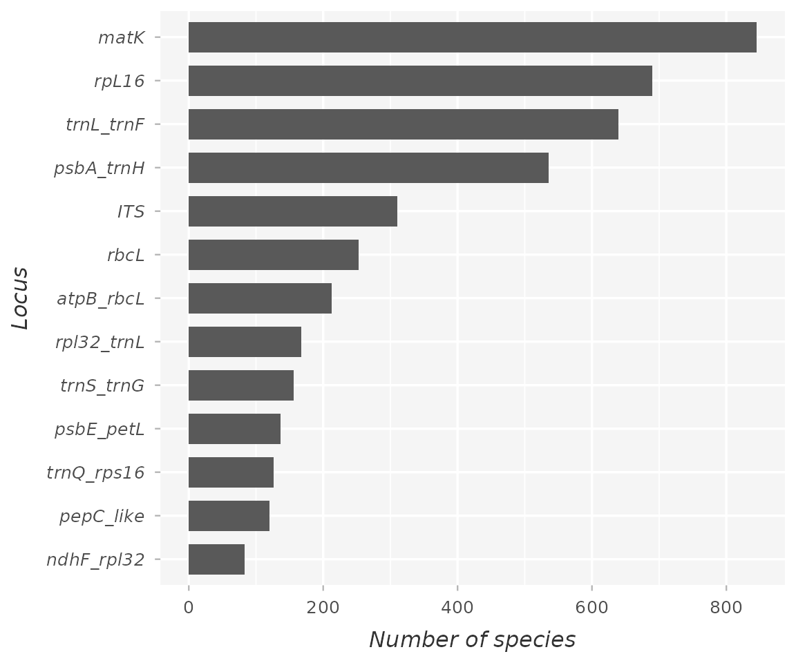
Figure 1. Number of species with sequence data in each of the 13 loci of the multilocus supermatrix (1,218 species: 1,190 ingroup, 28 outgroup). Eleven loci are plastid and two are nuclear.
Figure 2
Missing data are spread across species as well as across loci. More than half of the tips (669 of 1,208) have three to five loci, and 385 have one or two, so their placement rests on few characters. Tutorial 2 (Module 9) shows that the parent nodes of single-locus terminals have lower FBP than those of terminals with two loci or more, and the weakest placements in Figure 6 are expected among these species.
if ("retained_markers" %in% names(species_summary_iucn)) {
p2 <- ggplot(species_summary_iucn %>% filter(in_ml_tree == TRUE), aes(x = retained_markers)) +
geom_histogram(binwidth = 1, fill = phylocactus_colours("neutral")[["mark"]], color = "white") +
scale_x_continuous(breaks = seq(1, 13, 1)) +
theme_phylocactus(base_size = 12) +
labs(x = "Number of loci", y = "Number of species")
p2
}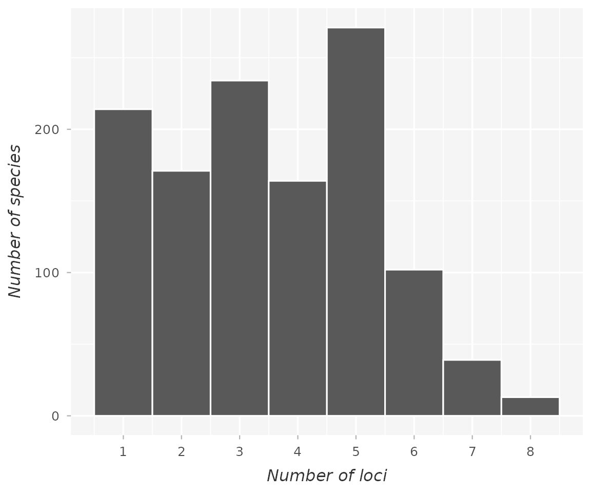
Figure 2. Number of loci with sequence data per species for the 1,208 tips of the maximum-likelihood tree (1,180 ingroup, 28 outgroup). Tips carry 1 to 8 loci (median 3); 214 are represented by a single locus.
Figure 3
Figures 1 and 2 give the totals of the matrix by locus and by species. In this figure, the heatmap shows how the empty cells are arranged. Rows are sorted by name, so the species of a genus are adjacent, and a block of absent loci shared by a genus shows a lineage sequenced for only some loci.
heatmap_data <- species_summary_iucn %>%
filter(in_ml_tree == TRUE) %>%
select(species, all_of(marker_cols)) %>%
pivot_longer(cols = all_of(marker_cols), names_to = "marker", values_to = "accession") %>%
mutate(present = accession != "-")
p3 <- ggplot(heatmap_data, aes(x = marker, y = fct_rev(species), fill = present)) +
scale_fill_manual(values = c(phylocactus_colours("neutral")[["fill"]], phylocactus_colours("sequential")[["700"]]),
name = "Present", labels = c("No", "Yes")) +
geom_tile() +
theme_phylocactus(base_size = 10) +
labs(x = "Locus", y = "Species") +
theme(
axis.text.y = element_blank(),
axis.ticks.y = element_blank(),
axis.text.x = element_text(angle = 45, hjust = 1, face = "italic"),
panel.grid.major = element_blank(),
panel.grid.minor = element_blank()
)
p3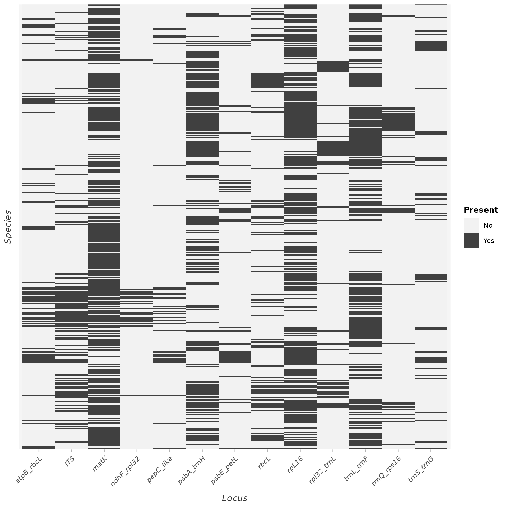
Figure 3. Presence of sequence data for each of the 13 loci in each of the 1,208 tips of the maximum-likelihood tree (rows, in alphabetical order of species name; names not shown). Dark grey, locus present; light grey, locus absent.
Figure 4
Each partition receives its own substitution model in the
maximum-likelihood inference (Tutorial 2, Module 7), and the coordinates
in Figure 4 are the boundaries of those partitions in the concatenated
matrix. They also show how much of the matrix each locus occupies:
matK and rbcL together take 4,018 of the
13,700 positions.
ranges_file <- system.file("extdata", "phylocactus_table_marker_ranges.tsv", package = "PhyloCactus")
if (file.exists(ranges_file)) {
TABLE_marker_ranges <- read_tsv(ranges_file, show_col_types = FALSE)
if ("marker" %in% names(TABLE_marker_ranges)) {
TABLE_marker_ranges <- TABLE_marker_ranges %>% mutate(length = end - start + 1)
p4 <- ggplot(TABLE_marker_ranges) +
geom_segment(aes(x = start, xend = end, y = marker, yend = marker), linewidth = 6, color = phylocactus_colours("neutral")[["mark"]]) +
theme_phylocactus(base_size = 12) +
theme(axis.text.y = element_text(face = "italic")) +
labs(x = "Alignment position (bp)", y = "Locus")
p4
}
}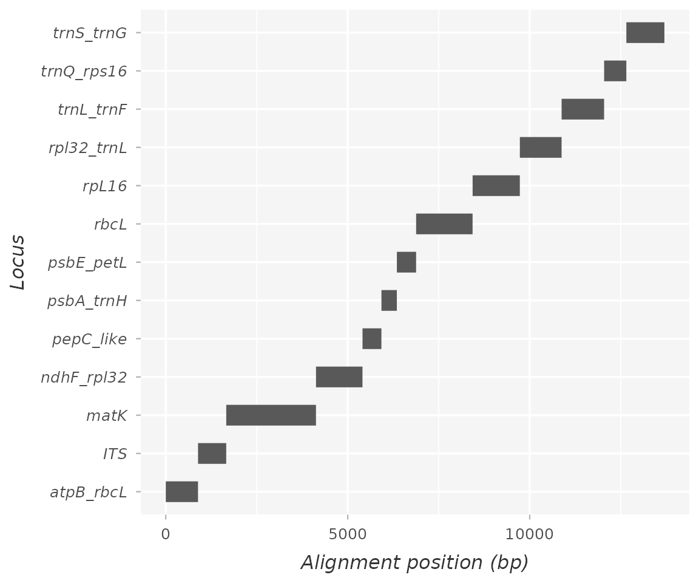
Figure 4. Position of the 13 locus partitions in the concatenated supermatrix of 13,700 aligned positions. Each bar spans the first to the last position of one partition.
Figure 5
Aligned length is a poor guide to the information a locus
contributes. rbcL and ndhF_rpl32 are among the
longest partitions and contribute few parsimony-informative sites, while
the 424 positions of psbA_trnH hold more informative sites
than either. matK contributes about a quarter of the
informative sites of the matrix and is also the locus with the most
species (Figure 1), so much of the resolution of the phylogeny depends
on it.
if ("parsimony_informative" %in% names(marker_stats)) {
p5 <- ggplot(marker_stats, aes(x = alignment_length, y = parsimony_informative, label = marker)) +
geom_point(size = 3.5, color = phylocactus_colours("neutral")[["mark"]]) +
ggrepel::geom_text_repel(size = 3.2, fontface = "italic", color = phylocactus_colours("neutral")[["text"]],
min.segment.length = 0, seed = 1) +
theme_phylocactus(base_size = 12) +
labs(x = "Aligned length (bp)", y = "Parsimony-informative sites")
p5
}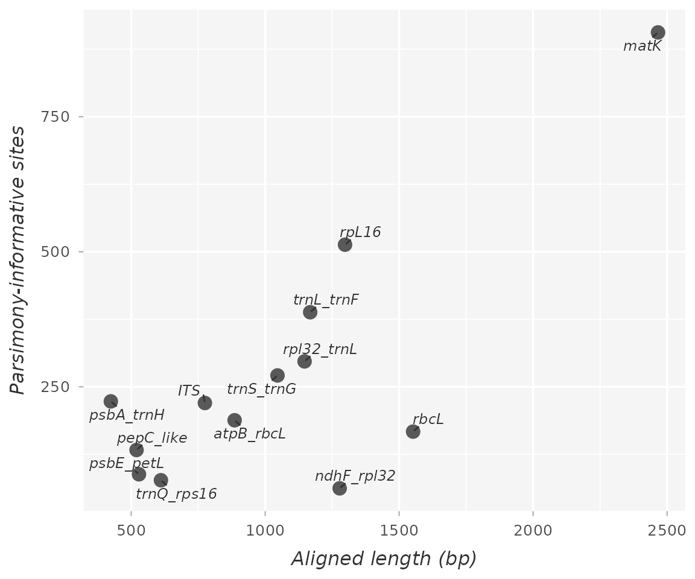
Figure 5. Parsimony-informative sites against aligned length for each of the 13 loci (one point per locus, labelled).
Figure 6
Figure 6 shows which relationships the supermatrix resolves once the constraint has fixed the backbone. The groups marked at the three upper levels, and seven of the 19 at the finest level (BCT, the three tribes of Opuntioideae, Notocacteae, Rhipsalideae and Copiapoa), sit on constrained nodes, so their monophyly is an assumption of the analysis and not a result of it. The other 12 were estimated from the data, with FBP from 100 (Eulychnia, Austrocactus) to 1 (Ferocactus). Five of the groups of Cacteae and Eulychnia, Austrocactus take the names of lineages in Figure 2 of Guerrero et al. (2019); their membership is that of the clades of this tree. Of the 1,171 nodes estimated from the data, 840 have an FBP under 70, and support falls with clade size: 91 of the 344 nodes that unite two terminals have an FBP of 90 or more, whereas 121 of the 141 nodes of more than 20 terminals have an FBP under 70. The data resolve many relationships between closely related species and few among the larger groups within the constrained clades (Tutorial 2, Module 9).
library(ggtree)
library(ape)
library(tidytree)
# Load support tree from Module 9
supp_tree_file <- system.file("extdata", "phylocactus_ml_tree.tree", package = "PhyloCactus")
if (file.exists(supp_tree_file) && nzchar(supp_tree_file)) {
ml_tree <- ape::read.tree(supp_tree_file)
ml_tree <- ape::ladderize(ml_tree)
# Canonical constraints table for clade annotations
constraints_csv_path <- system.file("extdata", "cactus_constraints.csv", package = "PhyloCactus")
if (file.exists(constraints_csv_path) && nzchar(constraints_csv_path)) {
constraints_tbl <- read_csv(constraints_csv_path, show_col_types = FALSE)
if (is.null(ml_tree$node.label)) {
ml_tree$node.label <- rep(NA_character_, ml_tree$Nnode)
}
ML_MAIN_LAYER_SPECS <- tibble::tribble(
~reg_name, ~fontsize, ~barsize, ~offset, ~offset_text, ~fontface, ~sort_desc, ~angle, ~align,
"level_4_supp", 2.5, 0.34, 0.010, 0.0038, "plain", TRUE, 0, TRUE,
"level_3", 3.5, 0.50, 0.170, 0.0055, "bold", TRUE, 270, TRUE,
"level_2", 4.0, 0.75, 0.220, 0.0100, "bold", TRUE, 270, TRUE,
"level_1", 4.5, 0.85, 0.270, 0.0100, "bold", TRUE, 270, TRUE
)
registry <- PhyloCactus::build_annotation_registry(
tree = ml_tree,
constraints_tbl = constraints_tbl,
supp_level4_min_tips = 3L
)
# Figures 6 and 8 label the level-4 groups of 10 or more terminals; Figures 7 and 9, those of 3 or more.
# A group is labelled only when it is monophyletic in the tree.
registry_compact <- registry
registry_compact$level_4_supp <- dplyr::filter(registry$level_4_supp, n_tips_target >= 10)
# A label of two names goes on two lines, so that it clears the bar of level 3
registry_compact$level_4_supp$label <- sub(", ", ",\n", registry_compact$level_4_supp$label, fixed = TRUE)
max_raw <- max(suppressWarnings(as.numeric(ml_tree$node.label)), na.rm = TRUE)
is_proportion <- !is.na(max_raw) && max_raw <= 1.0
# Identify topologically constrained nodes (cactus_constraints.tree)
# to avoid presenting algorithmic constraints as empirical bootstrap support
constraint_tree_file <- system.file("extdata", "phylocactus_constraint_tree.tree", package = "PhyloCactus")
constrained_nodes_vec <- integer(0)
if (file.exists(constraint_tree_file) && nzchar(constraint_tree_file)) {
constrained_df <- tryCatch(
PhyloCactus::classify_constrained_nodes(ml_tree, constraint_tree_file),
error = function(e) NULL
)
if (!is.null(constrained_df)) {
constrained_nodes_vec <- constrained_df$node[constrained_df$constrained]
}
}
ml_tree_data <- tidytree::as_tibble(ml_tree) %>%
mutate(
raw_val = suppressWarnings(as.numeric(label)),
pct_val = if (is_proportion) raw_val * 100 else raw_val,
is_constrained = node %in% constrained_nodes_vec,
support_label = ifelse(is_constrained | is.na(pct_val), NA_character_, sprintf("%.0f", pct_val)),
support_class = case_when(
is_constrained ~ "Constrained",
is.na(pct_val) ~ NA_character_, # the basal node of the unrooted tree has no FBP
pct_val >= 90 ~ ">= 90",
pct_val >= 70 ~ "70-89",
TRUE ~ "< 70"
),
support_class = factor(support_class, levels = c(">= 90", "70-89", "< 70", "Constrained"))
)
ml_tree_plot <- tidytree::as.treedata(ml_tree_data)
p6 <- ggtree(ml_tree_plot, linewidth = 0.3) +
theme_tree() +
geom_nodepoint(aes(fill = support_class, subset = !is.na(support_class)), shape = 21, size = 2, stroke = 0.2) +
scale_fill_manual(
values = phylocactus_colours("support"),
name = "Support (FBP)",
na.translate = FALSE
) +
geom_treescale(x = 0, y = -25, fontsize = 3, linesize = 0.4) +
theme(legend.position = "bottom")
p6 <- PhyloCactus::apply_clade_label_layers(p6, registry_compact, ML_MAIN_LAYER_SPECS)
# The outgroup is not a clade of the tree: a bar over its terminals, aligned with the level-4 bars
cactaceae_tips <- ape::extract.clade(ml_tree, registry$level_1$node[registry$level_1$label == "Cactaceae"])$tip.label
p6 <- PhyloCactus::add_outgroup_bar(p6, cactaceae_tips, fontsize = 2.5, barsize = 0.34, offset = 0.010, offset_text = 0.0038)
xmax <- max(p6$data$x, na.rm = TRUE)
p6 <- p6 + coord_cartesian(xlim = c(0, xmax + xmax * 0.35), clip = "off") + theme(plot.margin = margin(12, 12, 12, 12))
p6
}
}![**Figure 6.** Maximum-likelihood tree of 1,208 terminals (1,180 Cactaceae and 28 outgroup species of Anacampserotaceae, Portulacaceae and Talinaceae), inferred under the topological constraint of Tutorial 2 (Module 8). Tip names are not shown. Branch lengths are in expected substitutions per site (scale bar). Node symbols give the Felsenstein bootstrap proportion (FBP; Tutorial 2, Module 9) of the 1,171 nodes estimated from the data: white, FBP of 90 or more; grey, 70 to 89; black, under 70. Blue, the 34 nodes fixed by the constraint, which carry no FBP. Bars on the right mark, from outside in, Cactaceae; Cactoideae and Opuntioideae; Core Cactoideae I, Core Cactoideae II and Cacteae; and the 19 genera, tribes, subtribes and informal clades of 10 or more terminals. Genera in italics. The names of five groups of Cacteae (Mammilloid clade, *Ferocactus*, *Turbinicarpus*, *Rapicactus* and *Astrophytum*, *Echinocactus*) and of *Eulychnia*, *Austrocactus* are those of lineages in Figure 2 of Guerrero *et al*. (2019); each group is the clade of this tree that holds the genera assigned to it in `cactus_constraints.csv`. *Leptocereus*, *Armatocereus* is a clade of this tree and not a lineage of that figure.](tutorial-3-cactus-phylogeny-visualization_files/figure-html/figure_6_ml_tree-1.png)
Figure 6. Maximum-likelihood tree of 1,208 terminals
(1,180 Cactaceae and 28 outgroup species of Anacampserotaceae,
Portulacaceae and Talinaceae), inferred under the topological constraint
of Tutorial 2 (Module 8). Tip names are not shown. Branch lengths are in
expected substitutions per site (scale bar). Node symbols give the
Felsenstein bootstrap proportion (FBP; Tutorial 2, Module 9) of the
1,171 nodes estimated from the data: white, FBP of 90 or more; grey, 70
to 89; black, under 70. Blue, the 34 nodes fixed by the constraint,
which carry no FBP. Bars on the right mark, from outside in, Cactaceae;
Cactoideae and Opuntioideae; Core Cactoideae I, Core Cactoideae II and
Cacteae; and the 19 genera, tribes, subtribes and informal clades of 10
or more terminals. Genera in italics. The names of five groups of
Cacteae (Mammilloid clade, Ferocactus, Turbinicarpus,
Rapicactus and Astrophytum, Echinocactus) and
of Eulychnia, Austrocactus are those of lineages in
Figure 2 of Guerrero et al. (2019); each group is the clade of
this tree that holds the genera assigned to it in
cactus_constraints.csv. Leptocereus,
Armatocereus is a clade of this tree and not a lineage of that
figure.
Figure 7
Figure 6 cannot show 1,208 names at a legible size. The full-size tree prints every tip name and the FBP of every node estimated from the data, so that the placement and support of a given species can be looked up.
if (file.exists(supp_tree_file) && nzchar(supp_tree_file)) {
ML_SUPP_LAYER_SPECS <- tibble::tribble(
~reg_name, ~fontsize, ~barsize, ~offset, ~offset_text, ~fontface, ~sort_desc, ~angle, ~align,
"level_4_supp", 4, 0.60, 0.030, 0.0038, "plain", TRUE, 0, TRUE,
"level_3", 8, 0.65, 0.150, 0.0038, "bold", TRUE, 270, TRUE,
"level_2", 9, 0.70, 0.200, 0.0100, "bold", TRUE, 270, TRUE,
"level_1", 10, 0.80, 0.250, 0.0100, "bold", TRUE, 270, TRUE
)
p7_supp <- ggtree(ml_tree_plot, linewidth = 0.2) +
theme_tree() +
geom_tiplab(aes(label = gsub("_", " ", label)), size = 0.70, fontface = "italic", align = FALSE, linetype = "solid", linesize = 0.15, colour = phylocactus_colours("neutral")[["text"]]) +
geom_nodelab(aes(label = support_label), size = 0.70, hjust = 0.7, colour = "black", na.rm = TRUE) +
theme(legend.position = "none")
p7_supp <- PhyloCactus::apply_clade_label_layers(p7_supp, registry, ML_SUPP_LAYER_SPECS)
xmax_supp <- max(p7_supp$data$x, na.rm = TRUE)
p7_supp <- p7_supp + coord_cartesian(xlim = c(0, xmax_supp + xmax_supp * 0.30), clip = "off") + theme(plot.margin = ggplot2::margin(12, 12, 12, 12))
ggplot2::ggsave("9_Visualization/figures/Figure_7_ML_Tree_Extended.pdf", plot = p7_supp, width = 36, height = 48, limitsize = FALSE)
}Figure 7. Full-size version of Figure 6 on a 36 × 48
in (91.4 × 121.9 cm) page, not rendered on this page. All 1,208 tip
names are printed in italics, with the FBP beside each of the 1,171
nodes estimated from the data; the 34 constrained nodes carry no value,
and there are no node symbols. Bars on the right mark the groups of
Figure 6 at the three upper levels and, at the finest level, the 28
genera, tribes, subtribes and informal clades of three or more terminals
that are monophyletic in the tree, named as in Figure 6. One group of
cactus_constraints.csv is not monophyletic in the tree and
carries no bar: Armatocereus, the two species of the genus
outside the clade Leptocereus, Armatocereus.
The annotated treedata object can be exported in NEXUS
format for FigTree or similar programs:
annotated_treedata <- PhyloCactus::augment_treedata_with_registry(ml_tree_plot, registry)
treeio::write.beast(annotated_treedata, file = "9_Visualization/figures/annotated_ml_tree.tree")Full-size tree files. Figure 7 is not rendered on this page because of its size. Running the chunk writes two files to the workspace: -
9_Visualization/figures/Figure_7_ML_Tree_Extended.pdf-9_Visualization/figures/annotated_ml_tree.treeThe same files are in the
extended_trees/directory of the repository: Figure_7_ML_Tree_Extended.pdf and annotated_ml_tree.tree.
Figure 8
The chronogram places the clades of Figure 6 in time under calibration scheme 1, the main scheme of the package. It is read for the crown ages of the main clades and the width of their intervals. Tutorial 2 tabulates the ages of the root and four crowns under the three calibration schemes. The intervals come from bootstrap replicates of branch lengths on the fixed maximum-likelihood topology, with the ACP crown fixed, so they contain neither the uncertainty of the topology nor that of the calibration.
# Load summary chronogram from Module 10
chrono_file <- system.file("extdata", "phylocactus_chronogram_hpd.tree", package = "PhyloCactus")
if (file.exists(chrono_file) && nzchar(chrono_file)) {
chrono_beast <- treeio::read.beast(chrono_file)
constraints_csv_path <- system.file("extdata", "cactus_constraints.csv", package = "PhyloCactus")
if (file.exists(constraints_csv_path) && nzchar(constraints_csv_path)) {
constraints_tbl <- read_csv(constraints_csv_path, show_col_types = FALSE)
tree_phy <- as.phylo(chrono_beast)
if (is.null(tree_phy$node.label)) {
tree_phy$node.label <- rep(NA_character_, tree_phy$Nnode)
}
CHRONO_MAIN_LAYER_SPECS <- tibble::tribble(
~reg_name, ~fontsize, ~barsize, ~offset, ~offset_text, ~fontface, ~sort_desc, ~angle, ~align,
"level_4_supp", 2.5, 0.34, 0.010, 0.0038, "plain", TRUE, 0, TRUE,
"level_3", 3.5, 0.50, 0.170, 0.0055, "bold", TRUE, 270, TRUE,
"level_2", 4.0, 0.75, 0.220, 0.0100, "bold", TRUE, 270, TRUE,
"level_1", 4.5, 0.85, 0.270, 0.0100, "bold", TRUE, 270, TRUE
)
registry_chrono <- PhyloCactus::build_annotation_registry(
tree = tree_phy,
constraints_tbl = constraints_tbl,
supp_level4_min_tips = 3L
)
registry_chrono_compact <- registry_chrono
registry_chrono_compact$level_4_supp <- dplyr::filter(registry_chrono$level_4_supp, n_tips_target >= 10)
# A label of two names goes on two lines, so that it clears the bar of level 3
registry_chrono_compact$level_4_supp$label <- sub(", ", ",\n", registry_chrono_compact$level_4_supp$label, fixed = TRUE)
p8 <- ggtree(chrono_beast, linewidth = 0.3) +
theme_tree2() +
geom_range(range = 'height_0.95_HPD', color = phylocactus_colours("neutral")[["line"]], alpha = 0.4, linewidth = 1.5) +
theme_tree()
p8 <- PhyloCactus::apply_clade_label_layers(p8, registry_chrono_compact, CHRONO_MAIN_LAYER_SPECS)
# The outgroup is not a clade of the tree: a bar over its terminals, aligned with the level-4 bars
cactaceae_tips <- ape::extract.clade(tree_phy, registry_chrono$level_1$node[registry_chrono$level_1$label == "Cactaceae"])$tip.label
p8 <- PhyloCactus::add_outgroup_bar(p8, cactaceae_tips, fontsize = 2.5, barsize = 0.34, offset = 0.010, offset_text = 0.0038)
p8 <- PhyloCactus::add_chronogram_axis(p8, tree_phy, by = 5, digits = 0L, segment_size = 3, title_margin_top = 30)
xmax <- max(p8$data$x, na.rm = TRUE)
p8 <- p8 + coord_cartesian(xlim = c(0, xmax + xmax * 0.35), clip = "off") + theme(plot.margin = margin(12, 12, 12, 12))
p8
}
}![**Figure 8.** Chronogram of the 1,208 terminals of Figure 6, estimated by penalized likelihood in `treePL` under calibration scheme 1, the young tree of Zuntini *et al*. (2024), with the crown of the ACP clade (Anacampserotaceae, Cactaceae and Portulacaceae) fixed at 53.22 Ma (Tutorial 2, Module 10). Tip names are not shown. The root, the crown of the four families, is at 57.47 Ma. Node ages are the means over the 100 dated bootstrap replicates, summarized with `TreeAnnotator`. Grey bars: 95% intervals of the node ages over the same replicates (`height_0.95_HPD` in the file). They are confidence intervals from bootstrap replicates, not posterior intervals, and the fixed ACP crown has an interval of zero width. Bars on the right mark the groups of Figure 6, each a clade of the chronogram, with the names of Figure 6.](tutorial-3-cactus-phylogeny-visualization_files/figure-html/figure_8_chronogram-1.png)
Figure 8. Chronogram of the 1,208 terminals of Figure
6, estimated by penalized likelihood in treePL under
calibration scheme 1, the young tree of Zuntini et al. (2024),
with the crown of the ACP clade (Anacampserotaceae, Cactaceae and
Portulacaceae) fixed at 53.22 Ma (Tutorial 2, Module 10). Tip names are
not shown. The root, the crown of the four families, is at 57.47 Ma.
Node ages are the means over the 100 dated bootstrap replicates,
summarized with TreeAnnotator. Grey bars: 95% intervals of
the node ages over the same replicates (height_0.95_HPD in
the file). They are confidence intervals from bootstrap replicates, not
posterior intervals, and the fixed ACP crown has an interval of zero
width. Bars on the right mark the groups of Figure 6, each a clade of
the chronogram, with the names of Figure 6.
Figure 9
The full-size chronogram is for looking up the age of a given species: the age of the node that joins it to its closest sampled relative, with the interval of that age. That node is the stem of the species only if its sister species is in the tree; 775 accepted species are not sampled, and when the sister is among them the node is older than the species.
if (file.exists(chrono_file) && nzchar(chrono_file)) {
CHRONO_SUPP_LAYER_SPECS <- tibble::tribble(
~reg_name, ~fontsize, ~barsize, ~offset, ~offset_text, ~fontface, ~sort_desc, ~angle, ~align,
"level_4_supp", 4, 0.60, 0.030, 0.0038, "plain", TRUE, 0, TRUE,
"level_3", 8, 0.65, 0.150, 0.0038, "bold", TRUE, 270, TRUE,
"level_2", 9, 0.70, 0.200, 0.0100, "bold", TRUE, 270, TRUE,
"level_1", 10, 0.80, 0.250, 0.0100, "bold", TRUE, 270, TRUE
)
p9_supp <- ggtree(chrono_beast, linewidth = 0.2) +
theme_tree2() +
geom_tiplab(aes(label = gsub("_", " ", label)), size = 0.85, fontface = "italic", align = FALSE, linetype = "solid", linesize = 0.15, colour = phylocactus_colours("neutral")[["text"]]) +
geom_range(range = 'height_0.95_HPD', color = phylocactus_colours("neutral")[["line"]], alpha = 0.4, linewidth = 0.8) +
theme_tree()
p9_supp <- PhyloCactus::apply_clade_label_layers(p9_supp, registry_chrono, CHRONO_SUPP_LAYER_SPECS)
p9_supp <- PhyloCactus::add_chronogram_axis(p9_supp, tree_phy, by = 5, digits = 0L, segment_size = 10, title_margin_top = 28, bar_size = 30)
xmax_chrono_supp <- max(p9_supp$data$x, na.rm = TRUE)
p9_supp <- p9_supp + coord_cartesian(xlim = c(0, xmax_chrono_supp + xmax_chrono_supp * 0.30), clip = "off") + theme(plot.margin = ggplot2::margin(12, 12, 32, 12))
ggplot2::ggsave("9_Visualization/figures/Figure_9_Chronogram_Extended.pdf", plot = p9_supp, width = 36, height = 48, limitsize = FALSE)
}Figure 9. Full-size version of Figure 8 on a 36 × 48 in (91.4 × 121.9 cm) page, not rendered on this page: all 1,208 tip names in italics, the 95% intervals of the node ages over the 100 dated bootstrap replicates, the time axis of Figure 8 (ticks every 5 Ma) and the group bars of Figure 7.
The annotated treedata object can be exported in NEXUS
format for FigTree or similar programs:
annotated_chrono <- PhyloCactus::augment_treedata_with_registry(chrono_beast, registry_chrono)
treeio::write.beast(annotated_chrono, file = "9_Visualization/figures/annotated_chronogram.tree")Full-size chronogram files. Figure 9 is not rendered on this page because of its size. Running the chunk writes two files to the workspace: -
9_Visualization/figures/Figure_9_Chronogram_Extended.pdf-9_Visualization/figures/annotated_chronogram.treeThe same files are in the
extended_trees/directory of the repository: Figure_9_Chronogram_Extended.pdf and annotated_chronogram.tree.
Figure 10
The species record joins the checklist, the supermatrix and the tree, which do not hold the same species. Figure 10 places every species of the record in one category, and the categories are the bases of the figures that follow: Figures 11, 12 and 14 to 17 count the species sampled and dated in the tree, and Figure 13 counts accepted species without sequence data.
status_labels <- c(sampled_and_dated = "Sampled and dated", unsampled_checklist_gap = "Accepted, no sequence data",
outgroup_reference = "Outgroup", sequenced_collapsed_duplicate = "Identical sequence, removed")
plot_status <- species_summary_iucn %>%
count(status_pipeline) %>%
mutate(status = dplyr::coalesce(status_labels[status_pipeline], status_pipeline))
p10 <- ggplot(plot_status, aes(x = reorder(status, n), y = n)) +
geom_col(fill = phylocactus_colours("neutral")[["mark"]], width = 0.7) +
coord_flip() +
geom_text(aes(label = scales::comma(n)), hjust = -0.15, size = 3.8, color = phylocactus_colours("neutral")[["text"]]) +
scale_y_continuous(expand = expansion(mult = c(0, 0.15))) +
theme_phylocactus(base_size = 12) +
labs(x = NULL, y = "Number of species")
p10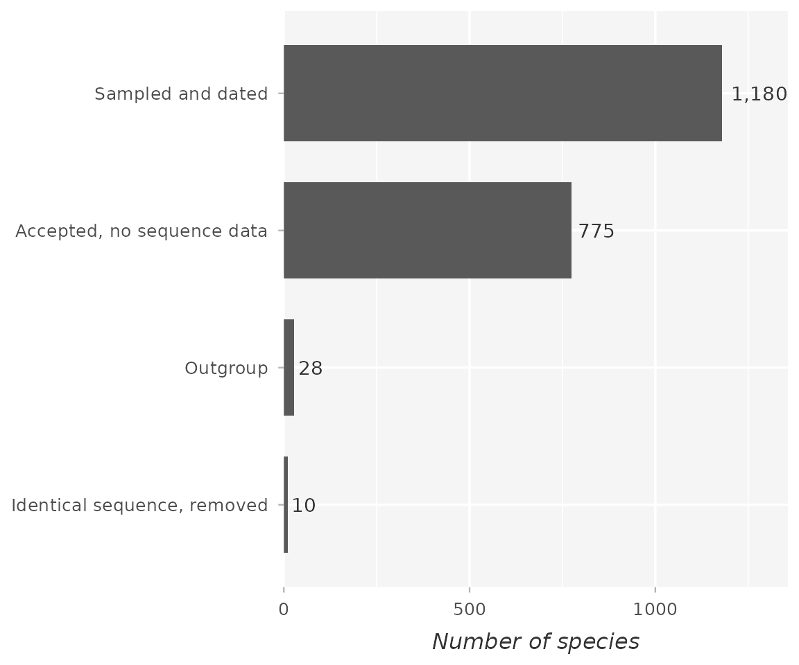
Figure 10. Status of the 1,993 species of the record
across the checklist, the supermatrix and the tree. Sampled and dated,
accepted species in the supermatrix and the chronogram (1,180);
accepted, no sequence data (775); outgroup species (28); identical
sequence, removed, species of the supermatrix that RAxML-NG
removed because their sequences were identical to those of another
species (10).
Figure 11
Figure 11 gives the conservation status of the species in the tree. Of the 839 assessed species, 221 (26.3%) are threatened (CR, EN or VU). Among the accepted species without sequence data, 266 have an assessment and 102 of them (38.3%) are threatened, so threatened species make up a larger share of what is missing from the tree than of what it contains.
if (any(species_summary_iucn$iucn_found, na.rm = TRUE)) {
TABLE_iucn_categories <- species_summary_iucn %>%
filter(iucn_found == TRUE, in_ml_tree == TRUE, is_ingroup == TRUE) %>%
count(iucn_category, iucn_category_name, sort = TRUE)
p11 <- ggplot(TABLE_iucn_categories, aes(x = reorder(iucn_category, n), y = n, fill = iucn_category)) +
PhyloCactus::scale_fill_iucn(name = "IUCN category") +
geom_col(width = 0.7) +
theme_phylocactus(base_size = 12) +
theme(legend.position = "none") +
labs(x = "IUCN category", y = "Number of species")
p11
}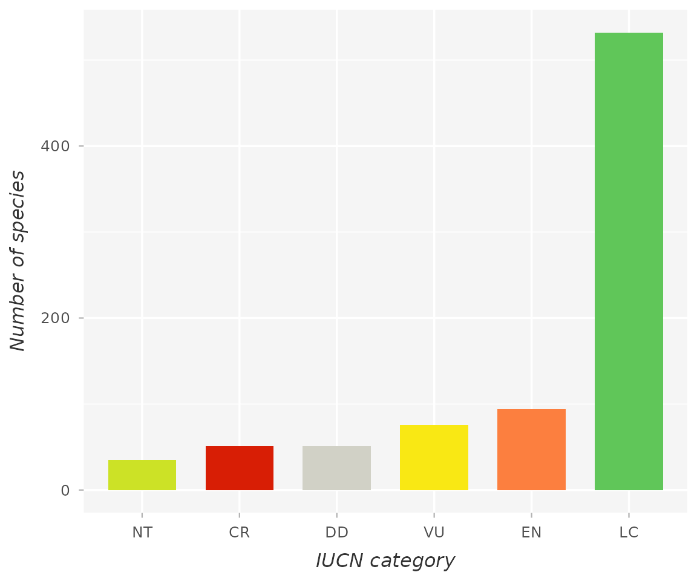
Figure 11. IUCN Red List category of the 839 ingroup species of the tree that have an assessment; the other 341 of the 1,180 have none and are not shown. LC, least concern (532); EN, endangered (94); VU, vulnerable (76); CR, critically endangered (51); DD, data deficient (51); NT, near threatened (35). Colours of the IUCN Red List categories.
Figure 12
Share of the loci sampled for each species in each IUCN category, for the ingroup species in the chronogram. The figure shows whether threatened species are represented by fewer loci. If rare species are collected and sequenced less often, threatened species could be represented by fewer loci than non-threatened ones. The median is three loci in EN, VU and DD and four in CR, NT and LC, and the distributions overlap widely; the figure shows no consistent loss of molecular data with threat category.
if (any(species_summary_iucn$iucn_found, na.rm = TRUE)) {
fig12_data <- species_summary_iucn %>%
filter(status_pipeline == "sampled_and_dated",
iucn_found == TRUE,
!is.na(iucn_category))
p12 <- ggplot(
fig12_data,
aes(x = iucn_category, y = pct_markers, fill = iucn_category)
) +
geom_violin(trim = TRUE, alpha = 0.5) +
geom_boxplot(width = 0.2, outlier.size = 0.6, alpha = 0.8) +
PhyloCactus::scale_fill_iucn(name = "IUCN category") +
theme_phylocactus(base_size = 12) +
theme(legend.position = "none") +
labs(x = "IUCN category", y = "Marker completeness (%)")
p12
}![**Figure 12.** Marker completeness, the percentage of the 13 loci with sequence data, of the 839 ingroup species of the chronogram that have an IUCN assessment, by Red List category (CR 51, DD 51, EN 94, LC 532, NT 35, VU 76). Violins are kernel densities trimmed to the observed range (7.7% to 61.5%, one to eight loci); boxes give the median and interquartile range, whiskers reach the most extreme values within 1.5 times the interquartile range, and points are outliers. Colours of the IUCN Red List categories.](tutorial-3-cactus-phylogeny-visualization_files/figure-html/figure_12_completeness_vs_iucn-1.png)
Figure 12. Marker completeness, the percentage of the 13 loci with sequence data, of the 839 ingroup species of the chronogram that have an IUCN assessment, by Red List category (CR 51, DD 51, EN 94, LC 532, NT 35, VU 76). Violins are kernel densities trimmed to the observed range (7.7% to 61.5%, one to eight loci); boxes give the median and interquartile range, whiskers reach the most extreme values within 1.5 times the interquartile range, and points are outliers. Colours of the IUCN Red List categories.
Figure 13
Threatened species (CR, EN, VU) among the 775 accepted species
without sequence data, by genus. Parodia (18 species),
Melocactus (14), Coleocephalocereus (7) and
Discocactus (7) have the most. The species are listed in
TABLE_conservation_prioritization_gaps.csv, which can guide
field collecting and sequencing.
Figure 13 shows where the threatened species missing from the tree are concentrated, and so where new sequences would add most of them. The categories differ among genera: in Parodia, 8 of the 18 species are CR, whereas the four species of Frailea and the two of Pilosocereus are all EN.
plot_gaps_genus <- TABLE_conservation_prioritization_gaps %>%
count(genus, iucn_category) %>%
mutate(iucn_category = factor(iucn_category, levels = c("CR", "EN", "VU")))
# Genera with two or more threatened species without sequence data
top_gap_genera <- TABLE_conservation_prioritization_gaps %>%
count(genus, sort = TRUE) %>%
filter(n >= 2) %>%
pull(genus)
p13 <- ggplot(plot_gaps_genus %>% filter(genus %in% top_gap_genera),
aes(x = factor(genus, levels = rev(top_gap_genera)), y = n, fill = iucn_category)) +
geom_col(width = 0.7) +
coord_flip() +
PhyloCactus::scale_fill_iucn(name = "IUCN category") +
theme_phylocactus(base_size = 12) +
theme(axis.text.y = element_text(face = "italic")) +
labs(x = "Genus", y = "Number of species")
p13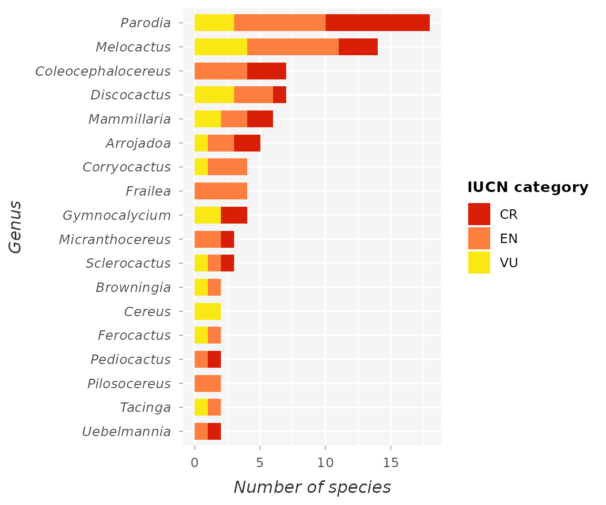
Figure 13. Threatened species (CR, EN, VU) without sequence data, by genus. Of the 775 accepted species without sequence data, 102 in 31 genera are threatened (CR 28, EN 49, VU 25). The figure shows the 18 genera with two or more of them (89 species), ordered by number, and omits the 13 genera with one. Colours of the IUCN Red List categories.
Figure 14
A species endemic to one country depends for its protection on the laws and reserves of that country alone, so the distribution of endemics among countries shows where the conservation of the sampled species is concentrated. Of the endemic species in the tree, 310 are endemic to Mexico; Brazil, Chile, Argentina and Peru have 51 to 95 each, and the other 11 countries 20 or fewer. The counts are of sampled species, so they reflect the sampling of the tree as well as the distribution of endemism in Cactaceae.
if (nrow(iucn_endemic_by_country) > 0) {
plot_data_endemism <- iucn_endemic_by_country %>%
group_by(country) %>%
summarise(n = sum(n)) %>%
arrange(desc(n))
p14 <- ggplot(plot_data_endemism, aes(x = factor(country, levels = rev(country)), y = n)) +
geom_col(fill = phylocactus_colours("neutral")[["mark"]], width = 0.7) +
coord_flip() +
theme_phylocactus(base_size = 12) +
labs(x = "Country", y = "Number of endemic species")
p14
}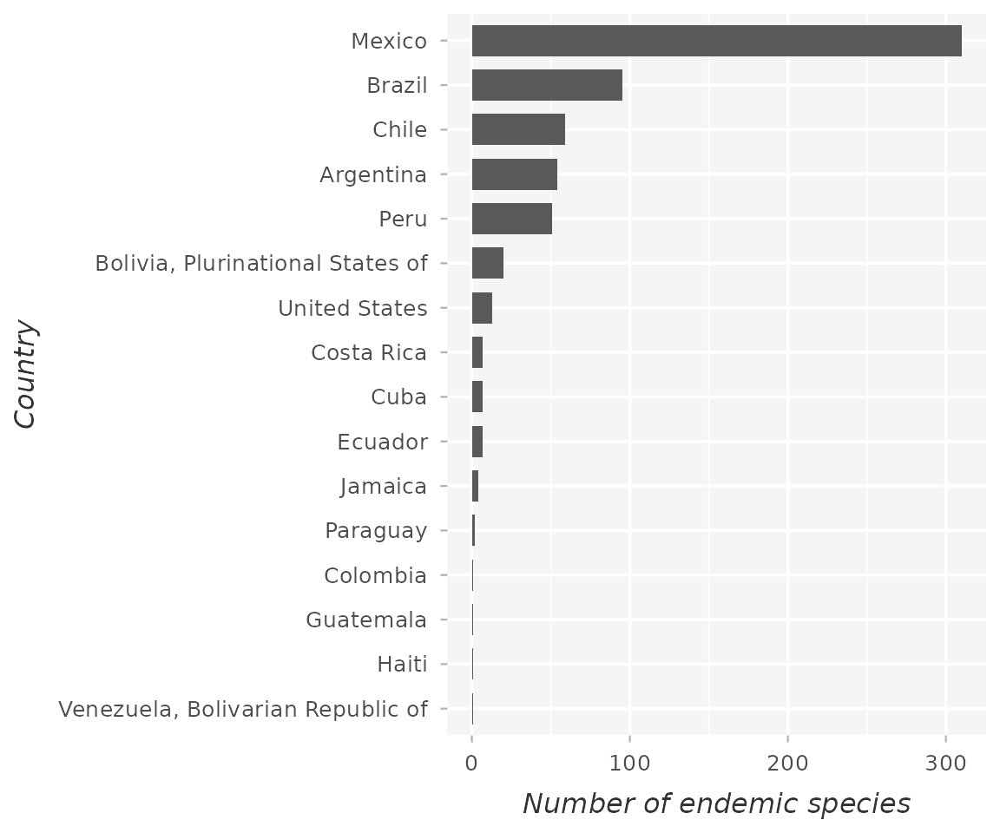
Figure 14. Number of ingroup species of the tree that the IUCN Red List records as endemic to one country, for the 16 countries with at least one (633 species; none is recorded as endemic to more than one country).
Figure 15
Figure 15 shows whether the endemics of each country are equally threatened. They are not: 42 of the 59 endemic species of Chile are threatened (CR, EN or VU), against 86 of 310 in Mexico and 7 of 54 in Argentina.
if (nrow(iucn_endemic_by_country) > 0) {
top_countries <- plot_data_endemism$country
plot_iucn_country <- iucn_endemic_by_country %>%
filter(country %in% top_countries) %>%
select(country, iucn_category, n)
if (nrow(plot_iucn_country) > 0) {
p15 <- ggplot(plot_iucn_country, aes(x = factor(country, levels = rev(top_countries)), y = n, fill = iucn_category)) +
geom_col(width = 0.7) +
coord_flip() +
PhyloCactus::scale_fill_iucn(name = "IUCN category") +
theme_phylocactus(base_size = 12) +
labs(x = "Country", y = "Number of endemic species")
p15
}
}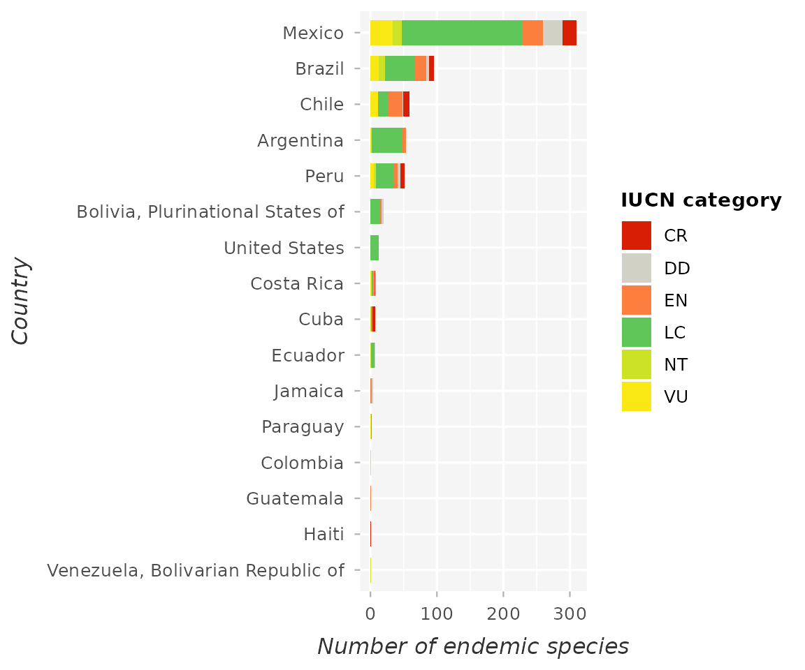
Figure 15. The 633 endemic species of Figure 14 by IUCN Red List category, for the same 16 countries (in total CR 51, EN 90, VU 64, NT 32, LC 350, DD 46).
Figure 16
The threats recorded in the assessments are the processes behind the categories of Figure 11. The most frequent class is the collection of the plants themselves (intentional use, recorded for 231 species), and the next six concern the use of the land: small-holder grazing and farming, housing, mining, agro-industry farming and nomadic grazing. Only threats recorded in an assessment are counted, so a short bar shows a threat seldom recorded, not necessarily a rare one.
if (any(iucn_classes$field == "threat")) {
plot_threats <- iucn_classes %>%
filter(field == "threat") %>%
select(class, n) %>%
arrange(desc(n)) %>%
slice_max(n, n = 15)
if (nrow(plot_threats) > 0) {
p16 <- ggplot(plot_threats, aes(x = reorder(class, n), y = n)) +
geom_col(fill = phylocactus_colours("neutral")[["mark"]], width = 0.7) +
coord_flip() +
theme_phylocactus(base_size = 12) +
labs(x = "Threat class", y = "Number of species")
p16
}
}![**Figure 16.** The 15 most frequent of the 47 threat classes that the IUCN Red List records for the ingroup species of the tree. 584 of the 1,180 species have at least one threat recorded, and a species is counted once in each class of its assessment. Classes are the most specific level of the IUCN Threats Classification Scheme recorded in each assessment (second or third level) and are labelled by name, so threats that share a name are pooled: Named species joins invasive non-native (8.1.2), problematic native (8.2.2) and problematic species of unknown origin (8.4.2).](tutorial-3-cactus-phylogeny-visualization_files/figure-html/figure_16_threats-1.png)
Figure 16. The 15 most frequent of the 47 threat classes that the IUCN Red List records for the ingroup species of the tree. 584 of the 1,180 species have at least one threat recorded, and a species is counted once in each class of its assessment. Classes are the most specific level of the IUCN Threats Classification Scheme recorded in each assessment (second or third level) and are labelled by name, so threats that share a name are pooled: Named species joins invasive non-native (8.1.2), problematic native (8.2.2) and problematic species of unknown origin (8.4.2).
Figure 17
Figure 17 describes the habitats of the sampled species as the assessments record them. Subtropical and tropical dry shrubland and dry forest are the two largest classes (401 and 216 species), and rocky areas the third (96). A species is counted in each habitat it occupies, so the bars overlap and their sum exceeds the number of species.
if (any(iucn_classes$field == "habitat")) {
plot_habitats <- iucn_classes %>%
filter(field == "habitat") %>%
select(class, n) %>%
arrange(desc(n)) %>%
slice_max(n, n = 15)
if (nrow(plot_habitats) > 0) {
p17 <- ggplot(plot_habitats, aes(x = reorder(class, n), y = n)) +
geom_col(fill = phylocactus_colours("neutral")[["mark"]], width = 0.7) +
coord_flip() +
theme_phylocactus(base_size = 12) +
labs(x = "Habitat class", y = "Number of species")
p17
}
}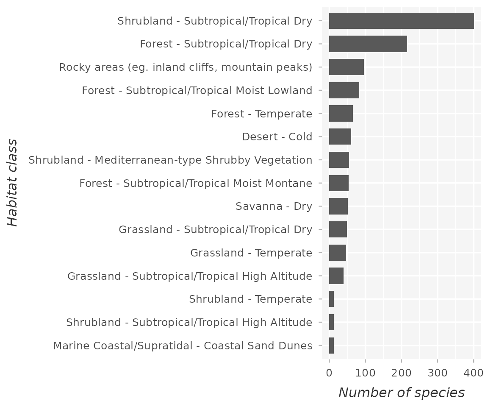
Figure 17. The 15 most frequent of the 31 habitat classes that the IUCN Red List records for the ingroup species of the tree. All 839 assessed species have at least one habitat recorded, and a species is counted once in each class of its assessment. Classes are the first or second level of the IUCN Habitats Classification Scheme, as recorded.
Conclusion
This tutorial produced the species record, the conservation tables, and the figures of the dataset, the tree and the chronogram.
Tutorial 4 compares the tree with published phylogenies of Cactaceae using Robinson-Foulds distances and multidimensional scaling of tree space.
Continue to Tutorial 4: Phylogenetic Validation and Comparative Analyses
References
- Gearty & Chamberlain, 2025. rredlist: ‘IUCN’ Red List Client. R package version 1.1.1. https://doi.org/10.32614/CRAN.package.rredlist
- Guerrero et al., 2019. Phylogenetic relationships and evolutionary trends in the cactus family. Journal of Heredity, 110(1), 4–21. https://doi.org/10.1093/jhered/esy064
- Isaac et al., 2007. Mammals on the EDGE: conservation priorities based on threat and phylogeny. PLoS ONE, 2(3), e296. https://doi.org/10.1371/journal.pone.0000296
- IUCN, 2026. The IUCN Red List of Threatened Species. Version 2026-1. Accessed 2026-10-15. https://www.iucnredlist.org
- Korotkova et al., 2021. Cactaceae at Caryophyllales.org – a dynamic online species-level taxonomic backbone for the family. Willdenowia, 51(2), 251–270. https://doi.org/10.3372/wi.51.51208